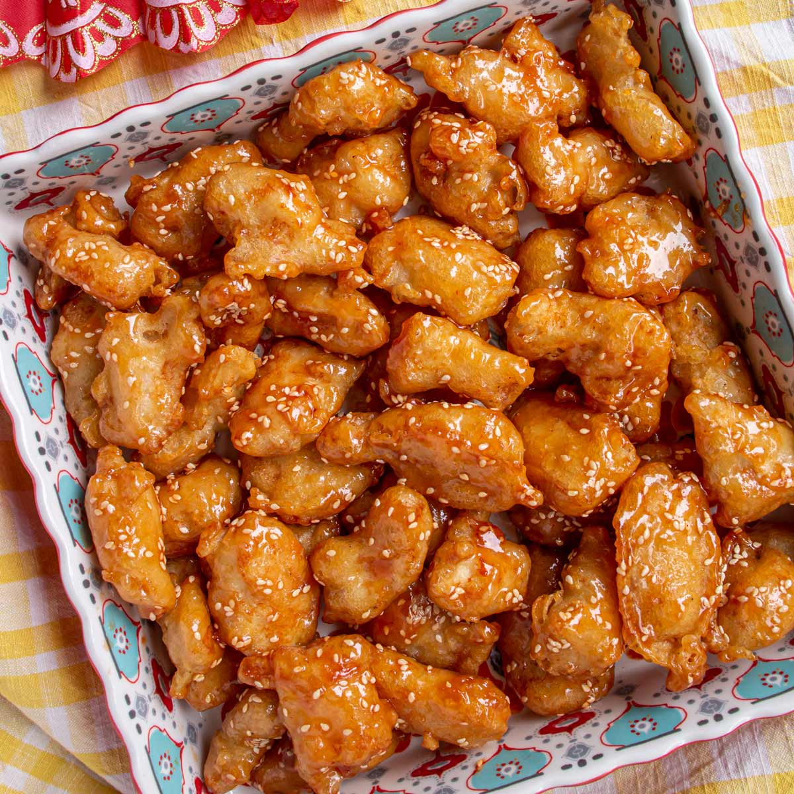

Sesame Chicken

Sesame Chicken from Lau:
Sweet, savory, and nutty fried chicken coated in sesame seeds
and sesame oil.
Main Ingredients:
- 3 cloves of garlic or 3 tsp
- 2-3 small dried chili pepper
- 28.3 g white sesame seeds
- 3 cups vegetable oil
Frying Batter Ingredients:
- 4 tbsp all-purpose flour
- 3 tbsp cornstarch
- 2 tsp baking powder
- 0.50 tsp salt
- 6.5 tbsp water
- 1 large egg (divided into 2 halves)
- 1 tsp oil
Chicken Marinade Ingredients:
- 340 g chicken breast
- 1 tbsp cornstarch
- 0.25 tsp salt
- 1 tsp chicken bouillon powder
- 1 tsp white pepper
- 1 tbsp oyster sauce
- 1 tbsp water
Sauce Ingredients:
- 1 tbsp light soy sauce
- 1 tbsp oyster sauce
- 0.50 tsp dark soy sauce
- 2 tbsp rice vinegar
- 3 tbsp sugar
- 3 tbsp water
- 1 tsp oil
- 1 tsp sesame oil
Slurry Ingredients:
- 1 tsp corn starch
- 3 tbsp water
-
In a small bowl, combine the soy sauce (1 tbsp), oyster sauce (1 tbsp), rice vinegar (2 tbsp), sugar (3 tbsp) and water (3 tbsp) and mix thoroughly.
-
Heat up a wok and pour in the white sesame seeds (28.3 g) and lower the heat. Stir around constantly using a spatula.
After 30 seconds, turn off the heat and stir for another 30 seconds. Once the seeds are golden brown, transfer to a plate or bowl and set aside.
-
Heat oil up on medium-low heat, about 3 cups.
-
In a medium bowl, mix together the all-purpose flour (4 tbsp) and cornstarch (3 tbsp).
Add the baking powder (2 tsp) and salt (0.50 tsp) and stir to combine.
-
Add the water (6.5 tbsp). Do this slowly and gradually a few tablespoons at a time, then stir to combine.
Add a bit more and mix again, until all of the water has been added to the batter.
The batter should be loose, but not too thin. Add more or less water as needed.
-
Crack and beat 1 large egg, adding half of it to the batter. Reserve the rest of the egg for later use.
Finally, add the oil (1 tsp) and mix thoroughly to combine.
-
Cut 340g (12 oz) of chicken breast.
-
For the marinade, add the cornstarch (1 tbsp), salt (0.25 tsp), chicken bouillon powder (1 tsp),
white pepper (1 tsp), oyster sauce (1 tbsp) and water (1 tbsp). Mix the chicken and marinade ingredients together thoroughly.
Add half of the reserved beaten egg into the chicken (so you use 0.25 of the large egg).
-
In another small bowl, combine the cornstarch (1 tsp) and water (3 tbsp) and stir to combine. Set aside.
-
Cut 2-3 small chili peppers and combine with 3 tsp/cloves of minced garlic.
-
Temp oil to be 325°F, add chicken and stir after 1.5 minutes. Cook for another minute (2.5 minutes total) and set aside.
Strain bits of food in oil.
Bring oil to 370°F and fry chicken for about a minute until crispy and up to temperature (165°F)
Strain bits of food in oil.
-
For sauce, add 1 tsp of oil to wok, then add garlic/pepper and fry until aromatic.
Add sauce and stir for 30 seconds until hot, turn to low heat, then add slurry and stir for a minute,
adding more water if too thick (should be like thick water).
-
Turn heat off, add 1 tsp of sesame oil, and toss with chicken.
Put sesame seeds in, toss, and then more sesame seeds.